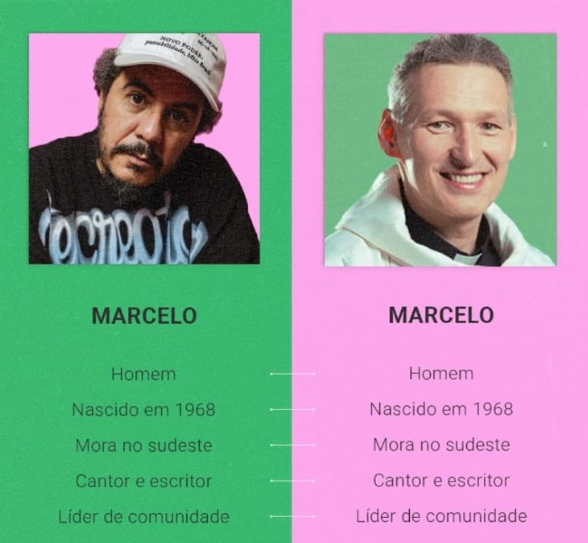
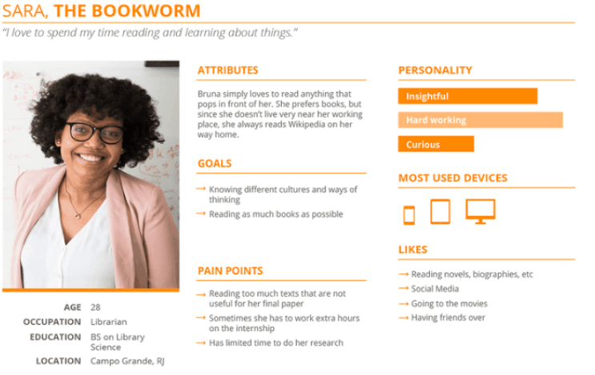

O que é Persona?
A persona é um conceito fundamental e amplamente utilizado na carreira do UX/UI Designer, sendo peça-chave tanto na estruturação de portfólios quanto na execução de projetos reais. Essencialmente, a persona é a representação fictícia, porém baseada em dados, dos usuários de um determinado produto ou serviço. Através dessa ferramenta, torna-se possível desenvolver soluções de design que atendam perfeitamente às reais necessidades, dores e objetivos do público.
Persona vs. Público-Alvo: Entendendo as Diferenças
É muito comum que ocorra confusão entre os termos persona e público-alvo, visto que ambos tratam do perfil de quem consome ou interage com uma marca. No entanto, eles operam em níveis de profundidade totalmente distintos:
- Público-alvo: Refere-se a uma definição macro e generalista. É um grupo de pessoas que compartilham características demográficas e socioeconômicas semelhantes, como faixa etária, localização e classe social, sem focar em um indivíduo específico.
- Persona: Representa um cliente ideal fictício com uma definição extremamente específica e humanizada. Ela é moldada a partir de pesquisas profundas de comportamento, hábitos e atributos reais extraídos diretamente dos clientes.
Loja de roupas femininas: Mulheres com idade entre 40 e 50 anos, residentes em São Paulo e renda mensal acima de 8 salários mínimos.
Joana, 50 anos: Mora em São Paulo, adora conversar com as amigas no WhatsApp, utiliza ativamente o Facebook e frequenta eventos sociais. Ela deseja ser vista no dia a dia como uma mulher séria, elegante e profissional.
Por que dados demográficos isolados falham?
Para ilustrar a armadilha de planejar produtos ou serviços baseando-se estritamente em recortes demográficos gerais, veja a clássica analogia visual abaixo. Duas personalidades com perfis de público-alvo perfeitamente idênticos exigem experiências de produto e abordagens de design completamente distintas:

O mesmo fenômeno de limitação do público-alvo pode ser observado no contexto nacional ao compararmos perfis que compartilham a mesma idade, região geográfica e até títulos profissionais genéricos:

UX/UI Design Focado na Persona
Para o profissional de UX, a persona atua como um instrumento indispensável para aprofundar o conhecimento sobre a audiência, viabilizando a criação de interfaces e fluxos totalmente pautados no Design Centrado no Usuário (UCD).
Não basta coletar e acumular métricas frias sobre o público-alvo; é mandatório segmentar, agrupar e humanizar esses dados para decodificar quem a persona realmente é. Com essas definições documentadas, a equipe do projeto conquista benefícios vitais:
- Mantém sempre em mente para quem o produto ou funcionalidade está sendo construído;
- Toma decisões técnicas e de design alinhadas estritamente ao perfil da persona;
- Estabelece um objetivo claro e um foco compartilhado por todo o time de desenvolvimento.
Quais os Benefícios de Utilizar Personas?
Os ganhos ao se desenhar personas estendem-se a todos os elos da cadeia: a empresa, os designers, o produto e, principalmente, o usuário final. O principal objetivo é estabelecer representações altamente confiáveis e tangíveis dos usuários para servir de bússola em decisões presentes e futuras.
Impacto nas Equipes Multidiscipinares:
- Stakeholders: Conseguem avaliar novos requisitos e ideias sob a ótica real do cliente, validando investimentos de forma estratégica.
- Arquitetos de Informação: Estruturam a navegação, taxonomia e fluxos de telas de maneira totalmente coerente com os hábitos de busca e interação do usuário.
Exemplo Prático de Ficha de Persona
Abaixo está documentado o mapeamento final de um perfil real condensado em uma ficha de persona, detalhando comportamentos, objetivos e dores para consulta de toda a equipe:

Como Construir e Estruturar uma Persona
Como regra de ouro no design de interação, recomenda-se não criar mais do que três ou quatro personas por projeto. Um escopo que ultrapasse esse limite infla o projeto de tal forma que o produto corre o risco de tentar abraçar o mundo e acabar não solucionando o problema de ninguém de forma satisfatória.
Pesquisas de mercado revelam um comportamento assimétrico entre empresas: pequenas empresas costumam empenhar a maior parte do tempo na fase de Pesquisa e Coleta. Em contrapartida, grandes corporações demandam mais tempo na fase de Criação e Refinamento da Persona. Isso decorre do fato de que produtos consolidados geram volumes colossais de dados analíticos, tornando o processo de síntese e isolamento do cliente perfeito muito mais complexo.
Revisão Constante e Por Que Personas Falham
As personas representam seres humanos e, portanto, não podem ser tratadas como documentos estáticos. O comportamento humano evolui constantemente, impulsionado pelo surgimento de novas tecnologias, tendências e pelo aprimoramento de produtos concorrentes. Se as necessidades e expectativas do mercado mudam, a persona obrigatoriamente precisa ser atualizada por meio de pesquisas periódicas para não se tornar obsoleta.
Os 5 Principais Motivos de Falha na Aplicação de Personas:
- Criada, mas nunca utilizada: O documento é finalizado com excelência estética, mas fica esquecido em uma pasta, sem aplicação prática no dia a dia do desenvolvimento.
- Criada de forma isolada e imposta: A equipe de UX desenvolve a persona em uma "bolha" e tenta impô-la ao restante da empresa sem construir um processo colaborativo.
- Falha grave de comunicação: Os membros da equipe ou stakeholders não foram devidamente aculturados e desconhecem a utilidade ou o propósito da persona.
- Falhas fundamentais de escopo: A equipe tenta forçar o uso de uma determinada persona para um propósito ou produto completamente desalinhado com suas características originais.
- Ausência crônica de atualização: A persona é concebida com maestria na fase de descoberta (discovery) inicial do projeto, mas nunca mais passa por uma nova rodada de validação com usuários reais ao longo dos anos.